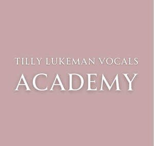
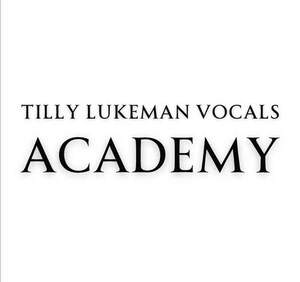

Trade Mark Journal No.2025/042 17 October 2025
UK00004274554 7 October 2025 (41)
Mark 1

Mark 2

- Class 41
- Singing education; Instruction in singing; Singing classes; Performing of music and singing; Gospel choir singing; Performance of music and singing; Teaching of music; Singing concert services; Pre-school teaching; Teaching; Teacher training services; Instruction in dancing; Education academy services for teaching acting; Dance instruction for children; Instruction in music; Music instruction; Performance of dance, music and drama; Music education; Training of teachers; Piano instruction; Educational services for teaching acting; Teaching at elementary schools; Dance schools; Guitar instruction; Dance instruction; Education, teaching and training; Academic mentoring of school age children; Tuition in music; Song writing services; Ballet lessons; Teaching academy services; Dance instruction for adults; Teaching at junior high schools; Tuition in music appreciation; Performance of music; Providing of training, teaching and tuition; Recording of music; Music recording; Voice training; Composition of music for others; Music composition for others; Arranging teaching programmes; Movement tuition for pre-school children; Instruction in ballet; Pre-school education; Producing and conducting exercises for music classes and programmes; Rental of teaching instruments; Arranging of music performances; Music publishing and music recording services; Musical instruction services; Ballet schools; Teaching services; Musical education services; Rendering of musical entertainment by vocal groups; Music recording studio services; Educational and teaching services; Education and training in the field of music and entertainment; Music performances; Entertainment services in the form of musical vocal group performances; Conducting of instructional, educational and training courses for young people and adults; Music concert services; Providing instruction in the field of dance; Nursery school services; Conducting distance learning instruction at the graduate level; Music composition services; Entertainment services provided by a musical vocal group; Musical concert services; Song publishing; Education and instruction; Training services relating to vocal expression; Music concerts; School services; Secondary school educational services; Nursery schools; Schools (Nursery -); Preparatory schools; Educating at senior high schools; Provision of educational entertainment services for children in after school centers; Kindergarten services [education or entertainment]; Providing courses of instruction at high school level; Services of schools [education]; Music competition services; Educational services provided by senior high schools; Dance club services; Organisation of dancing competitions; Pop music concerts (Organisation of -); Arranging for students to participate in educational activities; Music group services; Arranging for students to participate in educational courses; Dancing competitions (Organising of -); Organising of dancing competitions; Arranging and conducting of competitions [education or entertainment]; Arranging and conducting of music concerts; Production of music concerts; School courses relating to study assistance; Arranging of competitions for education or entertainment; Educational services provided by a school; Conducting distance learning instruction at the university level; Dance halls (Operation of -); Provision of dance classes; Organisation of music concerts; Vocational education for young people; Educational services relating to dancing; Auditioning for tv talent contests; Production of talent shows; Entertainment agency services; Ticket agency services [entertainment]; Entertainment ticket agency services; Artistic management of performing artists; Organisation of musical competitions; Production of entertainment shows featuring dancers and singers; Theatre ticket agency services; Organisation of musical performances; Artistic management of musical shows; Entertainment services in the form of musical group performances; Organisation of musical entertainment; Organization of shows [impresario services]; Entertainment services performed by singers; Artistic management of music venues; Musical group entertainment services; Hire of musical instruments; Entertainment services performed by a musical group; Booking agency services for theatre tickets; Organization of competitions [education or entertainment]; Competitions (Organization of -) [education or entertainment]; Organization of competitions for education or entertainment; Booking agencies for entertainment; Artistic direction of performing artists; Production of entertainment shows featuring singers; Organization of entertainment competitions; Organisation of live musical performances; Songwriting; Music performance services; Musical performance services; Organization of education competitions; Organisation of musical concerts; Music production services; Providing online courses of instruction; Providing online training seminars; Conducting of courses; Online education services; Music tuition by correspondence courses; Conducting instructional courses; Conducting of educational courses; Providing online music, not downloadable; Arranging of training courses; Training courses; Arrangement of training courses in teaching institutes; Written training courses; Distance learning services provided online; Postgraduate training courses; Arranging of courses of instruction; Arranging and conducting of educational courses; Distance learning courses; Providing courses of training; Providing online electronic publications in the field of music, not downloadable; Providing online electronic publications, not downloadable, in the field of music; Provision of online training; Providing online videos, not downloadable; Conducting courses, seminars and workshops; Online academic library services; Arranging and conducting of training courses; Providing on-line music, not downloadable; Provision of online tutorials; Arranging and conducting of day school courses for adults; Arranging professional workshop and training courses; Online entertainment services; Correspondence courses, distance learning; Conducting of correspondence courses; Providing courses of instruction; Educational services for providing courses of instruction; Providing online publications, not downloadable; Education services in the form of music television programmes; Teaching by correspondence courses; Residential education courses; Residential training courses; Arranging technical instruction courses; Correspondence courses; Production of course material distributed at vocational courses; Educational establishments providing courses of instruction (Services of -); Organisation of training courses; Organisation of courses using open learning methods; Preparation of educational courses and examinations; Providing on-line videos, not downloadable; Providing courses of instruction at college level; Online interactive entertainment; Providing of continuous training courses; Production of course material distributed at professional courses; Providing online electronic publications, not downloadable; Organisation of courses using distance learning methods.
Tilly Anne Lukeman